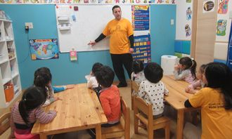

保育士も英語が必要になる時代がくる？
一般の保育園でも外国人の保護者がいたりなど、
プリスクールではなくても保育士が英語に触れる可能性が増えつつあります。
グローバルな世の中、幼児期に異文化・習慣を知り理解する国際的な視野は必要です。
サンライズキッズインターナショナルプリスクールでは、「英語」という第二言語を通して豊かな心を育てることを目標としています。
子どもにとっては「オールイングリッシュ」という初めての空間。そんな新しい環境が新鮮で楽しい場所となるよう、ネイティブ講師と共に日々の生活、プログラムを工夫し自然と英語力が身に付くような保育を目指しませんか。


サンライズのイベント紹介
サンライズキッズインターナショナルプリスクールは英語で生活する保育園。
プリスクールならではの楽しいイベントを毎月ネイティブ講師と保育士とで企画・実施しています。
入園して最初のイベント、イースター。園内に隠している卵を見つけます。見つけた卵は自分で作ったカゴへ。ウサギのコスチュームを身にまとったEaster Bunnyも登場します。

仮装して登園。パンプキン、バンパイヤ、プリンセスなど個性あふれる衣装で登園します。Ghost House(お化け屋敷)で遊んだあとはハロウインパレードへ。“Trick or Treat”でお菓子をもらいます。

12月に入るとクリスマス準備を始めます。ツリーを飾って、サンタさんへ手紙を準備。イベント当日はサンタクロースも登場します！
勤務地

Q&A
Q1. 英語力に自信がありません。必要な英語スキルはどのくらいでしょうか。
A1. 日常会話程度で構いません。「意欲的に英語を学びたい」気持ちがあれば、大歓迎です。採用時点で十分なスキルのない方でも、毎日のサークルタイム（英語のレッスン）で子ども達と一緒に学べます。働きながらスキルアップしていきましょう。
Q1. 日本人保育士も英語で話さなくてはいけませんか？
A2. 子ども達がいるところでは英語ですが、オフィス内は日本語で会話しています。保護者対応時などお子様の様子をお伝えする際は日本語の方が喜ばれる場合があります。
Q3.保育士資格は必要ですか？
A3. 子どもが大好き！」ということを重要視しているため、資格をお持ちの方の採用を優先していますが、資格取得にむけて勉強している方もフォローいたします。実践で経験しながら学べる環境です。「子どもが大好き！」で、一緒に子どもの成長を喜べる、元気で明るい方を求めています。
Q4. 保育経験はインターナショナルスクールでも役立ちますか？
A4. インターナショナル、といっても保育内容は保育園や幼稚園と変わりません。年間予定、月案、日案をもとに保育計画をしておりますので、ぜひ経験を活かしていただきたいと思います。
Q5. 質結婚出産後も働きたいのですが。
A5. 当園では「永く働いてほしい」との思いから、産休育休制度を整備し働きやすい職場を提供しています。サンライズ保育士出産・育児休暇を経て復帰・活躍している社員が大勢います。
保育士求人詳細


| 休日 | 土日祝 |
|---|---|
| 勤務時間 | 8：00-19：00 シフト制 |
| 給料 | 基本給 180,000円 保育士手当 40,000円 英語スキル手当 5,000円～20,000円 |
| 面談 | 全国より募集遠方の方ご安心ください。 遠方の方の面接は「skype」「ハングアウト」にて行います。 |
| 施設 | 清潔な施設、新しい施設 |
| 補助 | 引越し準備費用補助あり 最大30万円 |
| 備考 | 見学OK★働きながら英語力UP働きながら保育士資格取得可能 |